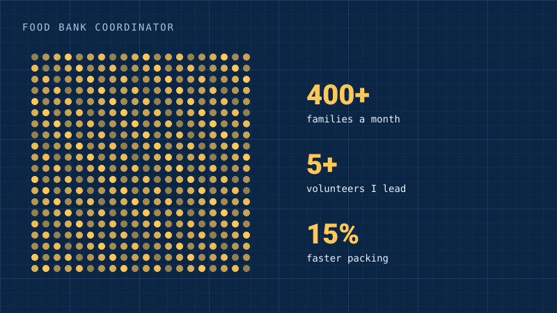

IAA and IACC
Food bank coordinator
I lead the volunteers who pack food for 400+ families a month.

By the numbers
- 400+families a month
- 5+volunteers I lead
- 15%faster packing
What I did
- Lead 5+ volunteers serving 400+ families a month.
- Made packing 15% faster.